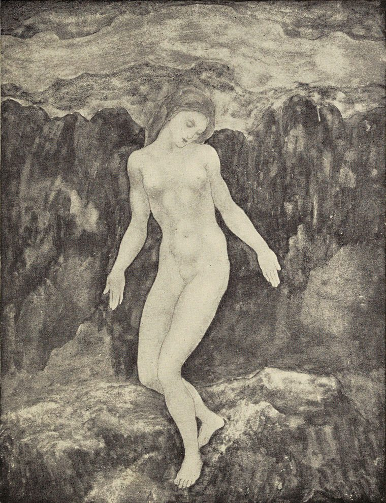

5Il dare
Allora un uomo ricco disse: Parlaci del Dare.
E lui rispose:
Date poco quando date dei vostri beni.
È quando date di voi stessi che date veramente.
Che cosa sono infatti i vostri beni, se non cose che conservate e custodite per paura di averne bisogno domani?
E domani, che cosa porterà il domani al cane troppo previdente che seppellisce ossa nella sabbia senza tracce mentre segue i pellegrini verso la città santa?
E che cos'è la paura del bisogno, se non il bisogno stesso?
Il terrore della sete, quando il vostro pozzo è pieno, non è forse la sete che nulla può spegnere?
C'è chi dà poco del molto che possiede—e lo dà per essere riconosciuto, e il suo desiderio nascosto rende malsani i suoi doni.
E c'è chi ha poco e lo dà tutto.
Costoro credono nella vita e nella generosità della vita, e il loro forziere non è mai vuoto.
C'è chi dà con gioia, e quella gioia è la sua ricompensa.
E c'è chi dà con dolore, e quel dolore è il suo battesimo.
E c'è chi dà e non conosce dolore nel dare, né cerca la gioia, né dà pensando alla virtù;
Costoro danno come laggiù, nella valle, il mirto esala il suo profumo nello spazio.
Attraverso le mani di costoro Dio parla, e da dietro i loro occhi Egli sorride alla terra.

È bene dare quando ci viene chiesto, ma è meglio dare senza che ci venga chiesto, per comprensione;
E per chi ha la mano aperta, cercare qualcuno che riceva è gioia più grande del dare.
E c'è forse qualcosa che vorreste trattenere?
Tutto ciò che avete un giorno sarà dato;
Date dunque ora, perché la stagione del dare sia vostra e non dei vostri eredi.
Spesso dite: «Darei, ma soltanto a chi lo merita.»
Gli alberi del vostro frutteto non dicono così, né le greggi del vostro pascolo.
Danno per vivere, perché trattenere è perire.
Certo chi è degno di ricevere i suoi giorni e le sue notti è degno di ricevere da voi ogni altra cosa.
E chi ha meritato di bere dall'oceano della vita merita di riempire la sua coppa al vostro piccolo ruscello.
E quale merito sarà più grande di quello che sta nel coraggio e nella fiducia, anzi nella carità, del ricevere?
E chi siete voi, perché gli uomini debbano squarciarsi il petto e svelare il proprio orgoglio, così che voi vediate nudo il loro valore e senza vergogna il loro orgoglio?
Badate prima a meritare voi stessi di essere donatori, e strumento del dare.
Perché in verità è la vita che dà alla vita—mentre voi, che vi credete donatori, non siete che testimoni.
E voi che ricevete—e tutti voi ricevete—non caricatevi del peso della gratitudine, per non porre un giogo su voi stessi e su colui che dà.
Piuttosto levatevi insieme al donatore sui suoi doni come su ali;
Perché badare troppo al vostro debito è dubitare della generosità di chi ha per madre la terra dal cuore libero, e Dio per padre.
